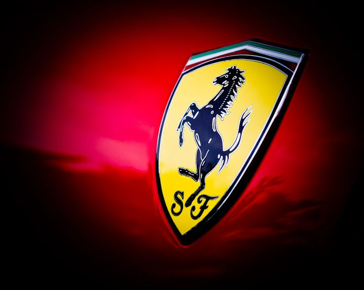

Гоночная команда, именуемая «Скудерия Феррари» (Scuderia Ferrari) была основана Энцо Феррари в 1929 году. Начала производить транспортные средства только в 1947 году[1].
Fiat SpA приобрела 50% Ferrari в 1969 году и расширила свою долю до 90% в 1988 году. В октябре 2014 года Fiat Chrysler Automobiles NV (FCA) объявила о своих намерениях отделить Ferrari SpA от FCA; на момент объявления FCA принадлежало 90% Ferrari. Разделение началось в октябре 2015 года с реструктуризации, в результате которой Ferrari NV (компания, зарегистрированная в Нидерландах) стала новой холдинговой компанией группы Ferrari, и последующая продажа FCA 10% акций в ходе IPO и одновременный листинг акций на Нью-Йоркской фондовой бирже . На оставшихся этапах разделения доля FCA в бизнесе Ferrari была распределена среди акционеров FCA, 10% из которых по-прежнему принадлежат Пьеро Феррари . Выделение было завершено 3 января 2016 года.
Деятельность
Компания выпускает гоночные и спортивные автомобили. В 2008 году компания произвела 6662 автомобиля (на 1,2 % больше, чем в 2007 году). Численность персонала компании на конец 2008 года составила 3017 человек (на 3,1 % больше, чем в 2007 году). Оборот в 2008 году составил 1,921 млрд евро (на 15,2 % больше, чем в 2007 году)[2].
Гоночное подразделение компании «Скудерия Феррари» (итал. Scuderia Ferrari) выступает в гонках Формула 1 и является самой успешной за всю историю гонок (15 раз становились чемпионами мира и 16 раз выигрывали Кубок конструкторов).
История автомобиля
1930—1950
Ferrari 125
Компания (первоначальное название её было Auto Avio Costruzioni) была основана в 1929 году гонщиком, конструктором и испытателем автомобилей «Альфа-Ромео» Энцо Феррари. Первоначально она производила различное оборудование для автомобилей. Сделанные компанией автомобили выпускались под маркой «Альфа-Ромео». С этой компанией у Феррари был договор. Первый автомобиль, носящий уже собственно имя «Феррари» появился в 1946. Это была модель Ferrari 125, с мощным 12-цилиндровым алюминиевым двигателем, призванная воплотить в жизнь мечту её создателя: придать обыкновенному дорожному автомобилю свойства гоночного без ущемления комфортабельности. В качестве торговой марки фирмы Энцо Феррари избрал гарцующего жеребца на жёлтом фоне.
Ferrari 166 Inter Coupe Touring
К концу 1947 существовали уже две модификации двигателя «Феррари», а его рабочий объём вырос у модели 166 с 1496 до 1995 куб. см. В следующем году собственная команда «Феррари» впервые одержала победу в гонках Милле-Милья и Тарга-Флорио. 1949 год принес команде новый триумф в тех же соревнованиях, а чуть позже победу в гонке «24 часа Ле-Мана».
1964 Ferrari 250 GT Lusso Berlinetta
1950—1960
В 1951 появляется этапная модель 340 America с двигателем, первоначально разработанным для Ferrari GT с рабочим объёмом 4,1 литра. В 1953 году эта же машина оснащается двигателем объёмом 4,5 литра и получает новое имя — 375 America. В том же году «Феррари» представляет 250 Europa, с трехлитровым двигателем.
Всего к началу 1954 Энцо Феррари выпустил около 200 своих машин в эксклюзивно-дорожном варианте и 250 гоночных моделей. Создавая свои дорожные автомобили, Феррари обращался к разным дизайнерским компаниям, делая свои модели непохожими друг на друга. Но модель 250 GT 1954 года положила начало многолетнему и плодотворнейшему сотрудничеству с компанией «Пининфарина», как нельзя лучше подстроившей свои кузова к новым короткобазным шасси, у которых ведущая задняя ось была подвешена на пружинах.
1958 Ferrari 250 GT California Spyder
Уже модель 250 GT выпустили не только как купе, но и кабриолет, а появившаяся в 1959 году 250 GT California, производившаяся на заказ, — яркий образец открытой модели 250 GT спортивного типа. В 1958 «Пининфарина» создала для модели 250 GT кузова специфически угловатой формы: эти автомобили, оснащенные 12-цилиндровым двигателем, и внешне производили впечатление огромной мощи, идеально послушной любым желаниям своих владельцев.
Модели 375 America и сменившая её в 1956 410 Super America (их было выпущено всего 14) предназначались для «сильных мира сего»: их дизайн навевал ощущение силы и уверенности в себе.
С 1957 по 1962 год выпускался видоизмененный «Феррари 250 GT California» с хищно заостренным профилем и съемной крышей. Свою первую победу эта машина одержала в гонках Tourist Trophy 1960 года на трассе Гудвуд.
1960—1970
Феррари принадлежат самые запоминающиеся машины 60-х годов нашего века: 250 GT в 1960 был преобразован в фастбек 250 GTE с кузовом «2+2», элегантный и пользующийся популярностью, на базе которого в 1964 был создан 330 GT «2+2» с четырёхлитровым мотором и оригинальными «косящими» фарами. С 1962 по 1964 на базе 250 GT был построен один из самых значимых автомобилей в истории — 250 GTO («Gran Turismo Omologata»). Всего было выпущено 39 автомобилей, обладающими 3-х литровым двигателем V12 мощностью 300 л. с., имеющая 5-скоростную коробку передач. Вес автомобиля составлял 1100 кг, колесная база — 2400 мм, а максимальная скорость более 283 км/ч.
Впоследствии в 2013 году Ferrari 250 GTO 1963 года был продан за рекордные 52 миллиона долларов и стал самым дорогим автомобилем в мире[3].
Непревзойденной осталась женственно-изящная, стремительная Berlinetta Lusso 1962 года, развивающая скорость свыше 225 км/ч. На смену 330 GT «2+2» в 1967 пришла 365 GT «2+2» с самобалансирующейся задней подвеской и усилителем рулевого управления. В 1971 её сменила более строгая в соответствии с духом времени 365 GT4.
В 1966 фирма разработала новый V-образный двигатель, ведущий своё начало от гоночных моторов: 12-цилиндровый, четырёхкулачковый, с двумя распределительными валами в каждой головке цилиндров, системой смазки с сухим картером, обеспечивший высокий крутящий момент и гибкость, имевший мощность 300 л. с.
Ferrari Daytona
В 1968 «Феррари» выпустила легендарную Daytona, или 365 GTB/4, с передним расположением 4,4-литрового V-образного 12-цилиндрового двигателя, мощностью 352 л. с., развивающего сверхскорость — 282 км/ч. Эта модель, внешне сдержанная и функциональная.
1970—1990
Dino 246 GT
В начале 1970-х годов появилась модель «Dino», названная в честь умершего сына Коммендаторе, с центрально расположенным двигателем производства ФИАТ— V-образным 6-цилиндровым; модель выпускалась и в 8-цилиндровом варианте, но 6-цилиндровая модель считается классической. Одно время «Dino» была фактически отдельной маркой. Автомобиль «Dino-206 GТ» выпускался с 1967 года с двигателем V6 (1987 см3 180 л. с. при 8000 об/мин; с 1969 года — «246 GT»-2418 см3, 195 л. с. при 7600 об/мин). Точно такие же, нетрадиционные для «Ferrari» моторы стояли на спортивном «Fiat Dino».
Модель 365 GT4, или Berlinetta Boxer, 1971 года выпуска, имела много черт гоночных автомобилей "Феррари: её двигатель рабочим объёмом 4,4 литра мог развивать скорость 275 км/ч; расположен он был горизонтально посредине кузова, а коробка передач для более рационального использования внутреннего объёма кузова располагалась под мотором. Шасси также использовало опыт гоночных машин: пространственная трубчатая рама и стальные панели кузова. На базе Ferrari 308 GT4 делались элегантные модели с кузовами «Пининфарина»; оснащенные V-образными 8-цилиндровыми двигателями, они привлекали внимание покупателей до начала 80-х годов.
Ferrari Testarossa
Установив горизонтальный 12-цилиндровый мотор Boxer гоночной модели 512 BB на Testarossa, компания создала массивную тяжелую машину, отвечающую самым взыскательным требованиям как спортсменов-гонщиков так и «звездных» клиентов. Яркий броский дизайн «Пининфарин» нес в себе квинтэссенцию рекламного духа, причем его создатель добивался не только внешнего эффекта: ребристые боковые воздухоприемники, нашедшие множество подражателей, служили для подачи воздуха в боковые радиаторы, заменившие передний радиатор 512 BB. Технические показатели модели также были безупречны: пятилитровый двигатель Testarossa, с четырьмя клапанами на цилиндр, достигал мощности 390 л. с., а его максимальная скорость — 274 км/ч.
Ferrari F40
В 1987 сам основатель компании Энцо Феррари возглавил коллектив конструкторов, подготовивших модель F40, обозначенную как «сумма усилий компании за годы её существования». Своё начало F40 ведет от GTO 1984 года и, на первый взгляд, имеет много общего с Ferrari 308 GTB, однако имеет существенные технические нововведения: турбонаддув, V-образный 8-цилиндровый двигатель продольного (а не поперечного) расположения, установленный на трубчатой раме, усиленной несущими панелями из кевлара, супермощность 478 л. с. — все говорит о том, что прежней осталась только конфигурация. Кузов этой супермодели выполнен из углеволокна и кевлара, а её тесный салон вполне отвечает спортивной сущности машины: в ней нет даже механизма для регулировки сидений. Поразительные технические характеристики и никакого комфорта — вот девиз 1118-килограммовой Ferrari F40: жесткая подвеска не поглощала дорожных неровностей, руль откликался на каждую выбоину, а великолепный мотор демонстрировал бесконечную мощь. Требовательный, неудержимо энергичный и привлекательный — таким стало последнее детище основателя фирмы.
Автомобили компании «Феррари», с 1969 контролировавшейся FIAT, а с 1989 окончательно отошедшей к корпорации, имеют репутацию самых дорогих в мире. Каждый из них — это легенда.
1990—2000
Ferrari 550 Maranello
Ferrari 360 Modena
Осенью 1992 года в Париже вышло в свет высокомощное заднеприводное спортивное купе классической компоновки 456 GT/GTA. Дизайн — Pininfarina. GTA — март 1996 (Женева). ASR, модернизированные кузов, подвеска и салон (4 места) — март 1998, Женева.
В мае 1994 года вышел F355, спортивный автомобиль преемник 348 GTB/GTS. Самая дешёвая и популярная модель фирмы. Дизайн — Pininfarina. Весной 1995 года появился Spider — кабриолет. Berlinetta — купе, GTS — купе со съемной жесткой крышей, F1 -управление трансмиссией по типу гоночного автомобиля. Прекращение производства Berlinetta/Targa — лето 1997.
550 Maranello преемник Testarossa/512 производится на базе 456 GT. Дизайн — Pininfarina. Дебют — 20 июля 1996. Модель 360 Modena — преемник F355 Berlinetta. Дизайн — Pininfarina. Премьера состоялась в марте 1999 года в Женеве. Начало продаж — лето 1999.
с 2000 года
Ferrari Enzo
Появление специальной модели Ferrari Enzo в честь знаменитого конструктора призвано напомнить автомобильному миру о передовой конструкторской школе Ferrari, которая убедительно подтверждается выдающимися успехами в Формуле-1[источник не указан 1064 дня]. Двухместный спортивный автомобиль оснащён 12-цилиндровым двигателем объёмом 6 литров и мощность 660 л. с. Время разгона до 100 км/ч составляет всего 3,65 секунды, . Максимальная скорость «Энцо Феррари» — 350 км/ч. Дизайн автомобиля разработало известное кузовное ателье Pininfarina. Модель «Энцо Феррари» несет в себе черты болидов Формулы-1 — обтекаемый корпус и узкий салон. Двери открываются вверх. Все важнейшие функции управления, включая переключение передач, вынесены на руль. Автомобиль оснащен 6-ступенчатой коробкой, смена передач осуществляется с помощью специальных клавиш на руле. Выпущено всего 399 автомобилей. Фирма предлагала их своим наиболее верным и известным клиентам по предварительным заявкам. Цена автомобиля составляла минимум 500 тысяч евро.
В 2018 году на Североамериканском международном автосалоне генеральный директор Ferrari Серджио Маркьонне заявил, что компания выпустит суперкар с электродвигателем.[4]
Эмблема
Эмблема Ferrari — гарцующий жеребец на жёлтом фоне — впервые появилась на печатных материалах и официальных документах компании в 1929 году. Однако в то время «Гарцующий жеребец» не изображался на машинах, так как они принадлежали Alfa Romeo и имели собственную эмблему в виде клеверного листа на белом фоне треугольной формы.
Энцо Феррари в своих воспоминаниях писал:
«В качестве заводской марки я продолжал использовать изображение вздыбленного коня, которое появилось у меня сначала на машинах Scuderia Ferrari. История этого вздыбленного коня простая и забавная. Такую эмблему нес на своем истребителе Франческо Баракка, с первой мировой войны. Его сбили под Монтелло. Когда в 1923 году я выступил на трассе „чиркуито дель Савио“ в Равенне, я познакомился с графом Энрико Баракка, отцом героя. Он представил меня своей жене, графине Паолине Баракка, которая однажды предложила: Феррари, а почему бы вам не изобразить вздыбленного коня моего сына на вашем гоночном автомобиле? Он принесет вам удачу.
Я все ещё храню фотографию аса с посвящением его родителей, в котором они вверяют мне этот знак с конём. Конь был и остался чёрным. Я же добавил золотистый фон, который является цветом города Модены».
Эмблема Scuderia Ferrari выглядит в виде треугольного щита, а фирменный знак завода Феррари в виде прямоугольника, с полосатой лентой итальянского флага.
Модели
Ferrari California
Ferrari 612 Scaglietti
Основная статья: Список автомобилей Ferrari
Суперкары
Dino 206/246/208/308 (1967—1980)
Ferrari Mondial 8/QV/Cabriolet (1981—1990)
Ferrari 308/208 (1975—1985)
Ferrari 328 (1985—1989)
Дорожные модели Ferrari
Основная статья: Список автомобилей Ferrari
Год Модель
1948 166 Inter
1951 195 Inter
1951 212 Inter
1952 342 America
1953 250 Europa
1953 375 America
См. также
Ferrari (автогоночная команда)
LaFerrari — дорожный флагман Феррари
Ferrari World — первый тематический парк Феррари (Абу-Даби, ОАЭ)
Примечания
History (англ.)
Ежегодный отчёт Fiat Group Архивная копия от 17 июля 2011 на Wayback Machine (англ.)
Ferrari 250 GTO 1963 года стал самым дорогим автомобилем
Ferrari выпустит суперкар на электродвигателе. Трешбокс.ру. Дата обращения 17 января 2018.
Ferrari Roma, la nuova Dolce Vita - Ferrari.com (англ.). www.ferrari.com. Дата обращения 18 ноября 2019.
